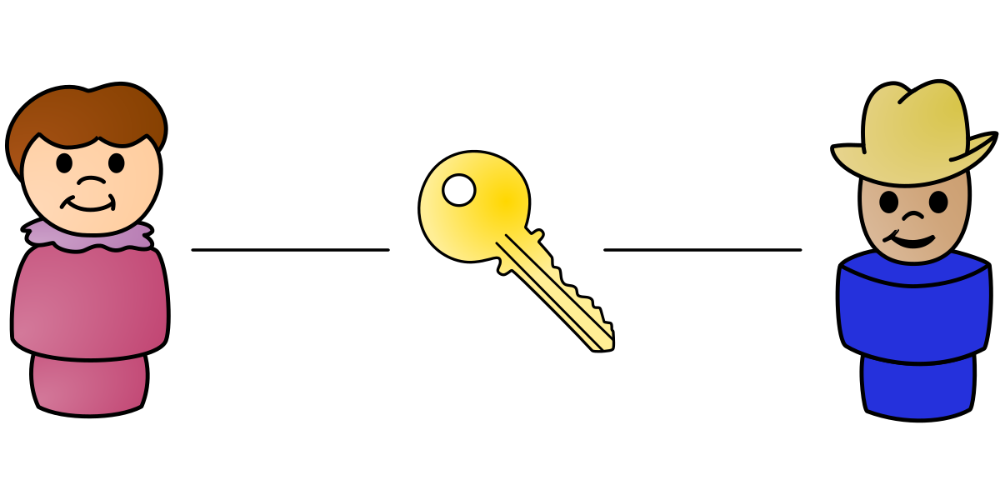
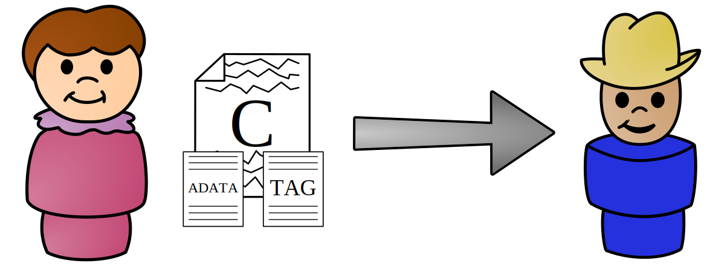
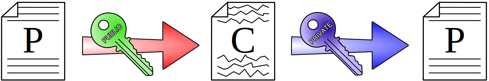
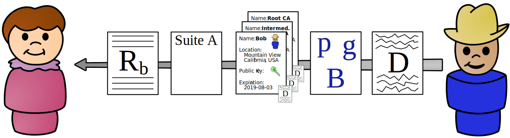
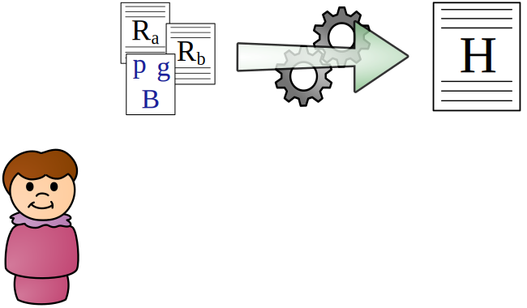
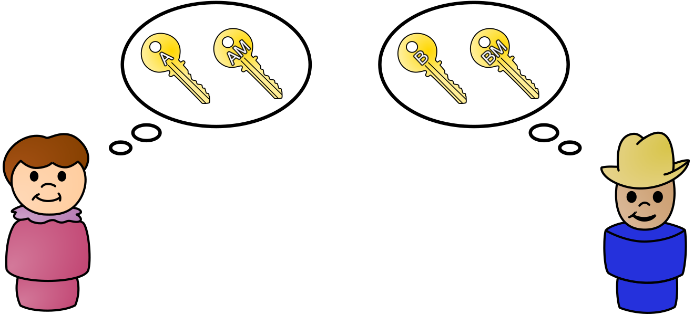
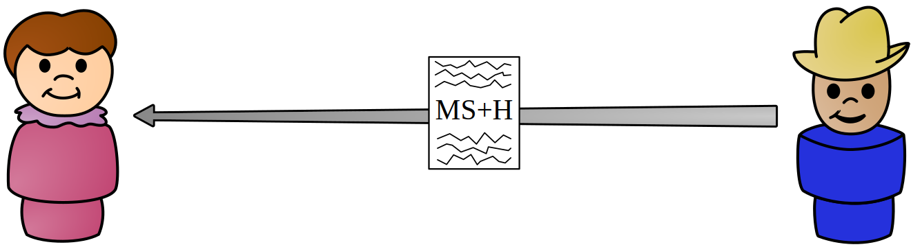
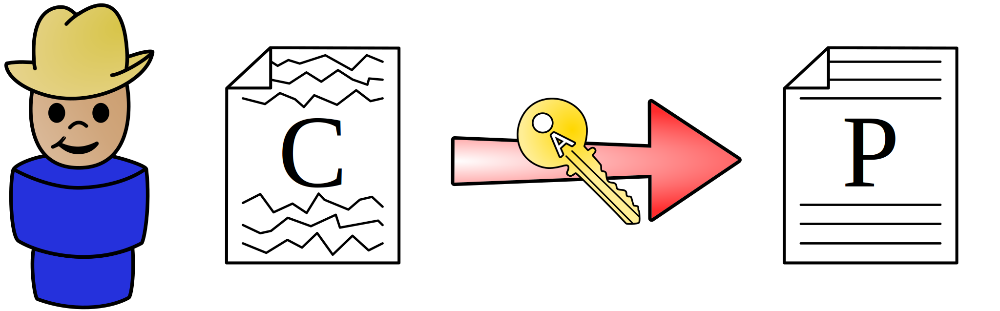

Intro to Cryptography
GET /April%20King HTTP/1.1
Information Security Engineer
Mozilla Corporation
Learning Objectives
- History and purpose of cryptography
- Build a solid understanding of cryptographic primitives
- Learn how cryptographic primitives are combined to make a complete cryptographic system
- Realize some of the many ways you can screw up when writing your own cryptography or secure communication protocols
Ignorance Objectives
- Writing your own cryptography
What is cryptography?
Cryptography is the practice and study of secure communications in the presence of third parties. It does this by providing three primary security guarantees:
- Confidentiality
- Can I keep my data from being decrypted and read?
- Integrity
- Has my data been tampered with?
- Authenticity
- Is the party I'm conversing with who they claim to be?

Most importantly, cryptography is a story about a couple of truly lovely people by the name of Alice and Bob.
They just want to have a private, secure
conversation over an insecure network.
So let's make their wish come true!
Cryptography History
The way way back machine!
Origin Story
… dates back to approximately 1500 BCE
- Original goal of cryptography:
- Keeping messages confidential, for the purposes of commercial trade secrets and military communications
Historic Cryptography
- Substitution ciphers
- Characters in plaintext are replaced with other characters
- Transposition ciphers
- Characters in plaintext are rearranged
These ciphers comprised the entirety of cryptography up until the beginning of modern cryptography with World War II and the creation of the Enigma machine.
Caesar Cipher
- Shift each letter in message three characters to the left
| A | B | C | D | E | F | G | H | I | J | K | L | M | N | O | P | Q | R | S | T | U | V | W | X | Y | Z |
| X | Y | Z | A | B | C | D | E | F | G | H | I | J | K | L | M | N | O | P | Q | R | S | T | U | V | W |
Example:
Conceptualize
- Algorithm
- Replace each letter with the letter three characters to the left
- Cipher
- Caesar (rotational) cipher, a substitution cipher
- Key
- A 23 (or -3) letter rotation
- Key space
- 26, since you have 26 possible rotation possibilities
That said, rotating 26 characters means that effectively
no encryption is done. 26 is a weak key!
Substitution Cipher
- Instead of shifting, match each letter to another letter randomly
| A | B | C | D | E | F | G | H | I | J | K | L | M | N | O | P | Q | R | S | T | U | V | W | X | Y | Z |
| G | J | Z | X | C | K | W | U | F | E | S | Q | D | L | I | R | P | A | O | M | Y | T | V | H | B | N |
Example:
Transposition Cipher
- Encryption involves rearranging the plaintext to produce ciphertext
- Decryption simply involves reversing the rearrangement
Let's take a look at a simple example...
Route Cipher
- Key
- Grid is five characters wide, write text from upper left rightward. Route from lower right and spiral upward.
Canonicalize:
MOZIL LAISM YDINO SAUR
Example:
So why might these simple
ciphers not be secure?
Frequency Analysis

It turns out that not every letter in the
English language appears equally as often
Frequency Analysis

Ideally, each letter should appear at the same frequency
Frequency Analysis
- Letters that appear more frequently in a language will appear more frequently in the ciphertext
- Since 'E' is the most common letter in English, whatever it maps to will be the most common letter in the ciphertext
- This leads to what is known as a ciphertext-only attack, where someone is able to deduce your plaintext from the ciphertext without knowing your key
Don't panic!
Vigenère Cipher
- A type of cipher known as a polyalphabetic cipher
- First described in the mid 1500s, it was considered the "indecipherable cipher" for over 300 years
- Defeated frequency analysis and eventually led to the development of the one-time pad
Vigenère Cipher
Vigenère Cipher

Vigenère Cipher
Vigenère Cipher

Vigenère Cipher
Two consecutive "L"s encrypt to different outputs
Vigenère Cipher
- Turns out, the Vigenère cipher is completely busted
- Sometimes patterns in the plaintext appear in the ciphertext
Breaking Vigenère
- Iterate through each possible key length
- Divide the ciphertext into chunks of that length (6)
- Each column is a simple rotation cipher; use frequency analysis to discover the rotation
- To reverse a rotation of 22 (W), move the ciphertext either -22 or +4. Repeat this process for every column, and we're back to the original message.
H: -8 (+18) • I: -9 (+17) • M: -13 (+13) • S: -19 (+7) • Y: -24 (+2)
Let's take this one step further
What if the key was exactly as long as the message?
(and also totally random)
One-time Pad
Congratulations! You've just invented the only truly unbreakable form of cryptography.
- If the key is at least as long as the message and truly random, you can combine (XOR) the key and the message to create a message that can never be decrypted
XOR (exclusive or)
XOR, sometimes written ⊕, is an operator that outputs true (1) if the inputs differ and outputs false (0) if they are the same.
- 0 ⊕ 0 == 0, since the inputs are the same
- 0 ⊕ 1 == 1, since the inputs are different
- 1 ⊕ 0 == 1, since the inputs are different
- 1 ⊕ 1 == 0, since the inputs are the same
XOR (exclusive or)
| Message: | 1 | 1 | 1 | 1 | 1 | 1 | 1 | 1 | 1 | 1 | 1 | 1 |
| Key: | 0 | 1 | 0 | 0 | 1 | 0 | 0 | 1 | 1 | 1 | 0 | 1 |
| Output: | 1 | 0 | 1 | 1 | 0 | 1 | 1 | 0 | 0 | 0 | 1 | 0 |
XOR has the special property that its output is as random as the most random input
- Take non-random message
- Combine with random key
- The output is as random as the key
If your key is a one-time pad, then your message can never be broken!
One-time Pad
So why don't we use one-time pads for all of our encryption, if it's so unbreakable?
- First, the key needs to be at least as long as your message. If your message is 5GB, then your key also needs to be 5GB.
- Also, the key can only be used once. Key reuse — like we saw in the Vigenère cipher — reveals information about all your previous messages.
The impracticality of having extremely long keys combined with the key reuse requirements makes the OTP infeasible for much real-world use.
Anyone selling them is likely a snake oil salesperson.
Modern Cryptography
Symmetric-key cryptography
Symmetric-key cryptography, like historic cryptography, uses the same key for both encryption and decryption:
Here, plaintext is being encrypted by a key into ciphertext, and then decrypted with that same key into the original plaintext.
Keys
Remember that in a proper cryptosystem, the key is the only thing that keeps your data confidential. As such, keys should be:
- Kept secure and be deleted as soon as they are no longer needed
- Independent from any past or future key
- Chosen from safe values in the key space
Key space
When we talk about keys, we often say "128-bit keys" or "256-bit keys." What does that mean?
- "128-bit" refers to the size of the key space. Key space is simply the number of possible keys.
- Since a bit can have two values (0 or 1), a 128-bit key space has 2128 possible keys.
How big is 2128?
If a single key was the size of a grain of sand, the key space would be 31x the size of Jupiter! 310 bits gets you up to the size of the known universe.
Symmetric-key cryptography
- Advantages
- Computationally very fast and simple
- Keys are small (typically 128 to 256 bits)
- Can provide assurances about authenticity and integrity with the use of additional constructs
- Disadvantages
- Key management is difficult, as each party needs a copy of the key to encrypt or decrypt
Due to its speed, symmetric-key cryptography is the primary form of encryption for bulk encryption.
Symmetric-key cryptography
| Cipher | Key size | Type |
|---|---|---|
| AES | 128, 192, or 256 bits | Block |
| ChaCha20 | 256 bits | Stream |
| Camellia | 128, 192, or 256 bits | Block |
| 3DES | 192 bits | Block |
| RC4 | 128 bits | Stream |
| Twofish | 128, 192, or 256 bits | Block |
Mozilla recommends AES with 128 or 256-bit keys or ChaCha20.
When in doubt, contact us!
Stream ciphers
- Operate on one bit at a time
- Take the key…
- …plus maybe a nonce, or a number only used once…
- Use these to produce a stream of bits as long as your message, known as a keystream
- Keystream is then XORed with the plaintext to produce the ciphertext
- Like a one-time pad, the keystream must never be reused; the key/nonce must be changed with each use
Stream ciphers

The key and nonce are combined to generate a keystream, which is then XORed with the plaintext to generate the ciphertext
Block ciphers
- Operate on a fixed-size block of data (usually 128 bits), unlike stream ciphers
- Are the most commonly used symmetric ciphers (AES)
- Require that data be padded to the length of the block size, adding complexity
- A given block of data will always encrypt to the same output if you use the same inputs
Block ciphers
Why is it a problem that the same input
always encrypts to the same output?
- Leaks metadata about plaintext: many protocols and file formats have a identical headers
- Any patterns in the plaintext will appear in the ciphertext
Block cipher modes of operation
To solve this, all block ciphers have
modes of operation for their use:
- Electronic Code Book (ECB): Encrypt each block independently
- Cipher Block Chaining (CBC): Propagate information from one block to the next
- Counter (CTR): Encrypt a counter and XOR it with the plaintext
- Galois/Counter (GCM): Counter + integrity†
† More later!
Modes matter!


- Take an image and divide it into equal-sized blocks
- Encrypt each block separately using a symmetric key and cipher, using the Electronic Codebook (ECB) block mode of operation
- The encrypted message should ideally look like random noise
This is meant to scare you! Even with good
ciphers, you can still screw up cryptography!
Block cipher modes of operation
The various block cipher modes each provide their own benefits besides simply eliminating patterns in ciphertext
- Allowing the use of an initialization vector (random input) or nonce so that identical plaintexts encrypt differently
- Change block ciphers to function like stream ciphers, eliminating the need for padding
- Increased performance through use of parallelization
- Some modes, such as the recommended Galois/Counter Mode (GCM), provide assurances about the integrity and authenticity of the encrypted block
This is the counter (CTR) block mode of operation
This is the counter (CTR) block mode of operation
- Create a nonce and set your counter
This is the counter (CTR) block mode of operation
- Create a nonce and set your counter
- Using your key, encrypt the nonce and counter, forming a single block of the keystream
This is the counter (CTR) block mode of operation
- Create a nonce and set your counter
- Using your key, encrypt the nonce and counter, forming a single block of the keystream
- XOR one block of plaintext with that keystream block
This is the counter (CTR) block mode of operation
- Create a nonce and set your counter
- Using your key, encrypt the nonce and counter, forming a single block of the keystream
- XOR one block of plaintext with that keystream block
- Increment the counter for each successive block
The nonce must always be unique, and the counter should never loop!
Remember Alice and Bob?
They still want to have a conversation.

No problem, they physically
meet up and exchange a symmetric key.
After that, they encrypt all their messages
using that key, a symmetric cipher, and an
appropriate block mode of operation.

Everyone give a hearty welcome to our
good friend, Eve the Eavesdropper!

Everyone give a hearty welcome to our
good friend, Eve the Eavesdropper!
She's disappointed by this whole symmetric-key cryptography business.
See, when Alice and Bob use symmetric-key cryptography correctly, it provides them confidentiality.
Eavesdroppers like Eve can't decrypt and read their messages.
But what if our attacker wasn't just
passively listening like Eve was?

A round of applause for Mallory, everyone!
Mallory just loves to sit in the middle
of conversations and meddle with them.
What if Mallory was intercepting
Alice and Bob's conversation?
Mallory couldn't decrypt the ciphertext,
but she could still modify it.
It might decrypt to gibberish or it might not.
Either way, Bob has no way of knowing
that it has been tampered with.
Alice and Bob have achieved confidentiality, but they haven't achieved integrity or authentication.
What Alice and Bob need is a
message authentication code.
A message authentication code provides integrity and authenticity assurances about a message.
- Alice takes any given message† and a MAC key that she and Bob have previously exchanged
- She inputs these into a function that combines them and outputs a short piece of information called a MAC
- She then attaches the MAC to the ciphertext
- When Bob receives the message, he combines it with the MAC key the same way Alice did
- If that function outputs the same MAC, then the message and MAC hasn't been tampered with
† Generally the ciphertext, known as Encrypt-then-MAC
Mallory can modify the ciphertext and
MAC to her heart's content.
But because she doesn't know the symmetric
key, she can't generate the correct MAC.
So when Bob plugs the message and key into the MAC function, he'll quickly see that the MAC he received doesn't match the MAC he generated.
You're probably thinking this whole MAC thing might
as well be called a Magic Authentication Code.
How might a function like this work?
One such method is a hash-based message authentication code, or HMAC.
So, err… what's a hash?
Hash functions

Cryptographic hash functions take any
size input and convert it to a fixed size
output called a hash or message digest.
Hash functions
- Always result in the same size output (typically 128-512 bits), regardless of input size
- Sensitive to input changes: a single bit difference in the input should result in a completely different hash
- Make it difficult to find two different inputs that result in the same output (collision resistance)
- Aren't reversible: you can't go from the hash back to the original message
What might this look like?
This presentation can read your mind†
It knows you're thinking, “Ah ha! I've totally got this!”
†Bwahahahahaha! 😆
A brief exercise
You run a photo sharing site with a public API:
- Users have two credentials
- A public user id
- A shared secret (key) that only you and they know
- Changes are made with HTTP POST requests
- To authenticate the message, the user concatenates their secret key with their message to generate a message authentication code using the cryptographic hash function MD5
Everything look great?
Turns out, that piece of code is horribly insecure, due to length-extension attacks on many hash functions.
- If you know the value of md5('mozilla'), it's easy to calculate md5('mozillarules') without knowing the prefix 'mozilla'
- So if an attacker knows the value md5(secret&key=value), it's easy for them to calculate md5(secret&key=value&key2=value2) without knowing the value of 'secret'
- As long as the attacker has one valid signed message, they can forge that message plus any additional parameters they want and it will authenticate
I did warn you not to write your own crypto!
Just kidding. I know you'd never do something like that.
You'd go to your carefully-sourced cryptographic
library and use HMAC as instructed.
After all, the way they are constructed†
makes them immune to these attacks.
†HMAC = H((K ⊕ opad) || H((K ⊕ ipad) || m))
So when Alice sends a message to Bob,
she can protect it with HMAC.
The symmetric-key crypto provides confidentiality, and HMAC provides integrity and authentication.
Just when you thought things couldn't get any better…
…they get better! 😍
AEADs
Cryptographers recognized that combining a cipher, block mode, and MAC was really hard and error prone.
- Authenticated Encryption with Associated Data (AEAD) is a block cipher mode of operation
- It combines encryption and decryption with integrity verification
- The most common are AES-GCM (AES in Galois/Counter mode) and ChaCha20-Poly1305
- Strongly preferred over other symmetric ciphers and modes of operation. Use them!
- Alice takes her plaintext, symmetric key, and some associated data, and inputs them into the AEAD for encryption
- The AEAD outputs the ciphertext and an authentication tag

She then sends the ciphertext, associated data, and authentication tag to Bob
- Bob takes the ciphertext, associated data, and authentication tag and inputs them in the AEAD for decryption
- If the authentication is successful, the AEAD outputs the plaintext
?
Unfortunately, symmetric-key cryptography doesn't solve the most persistent of cryptography problems.
Key exchange
Symmetric-key cryptography becomes impossible
to scale as the number of parties grows.
Key exchange
Remember Alice and Bob?
They still want to have a conversation.
Key exchange
No problem, they met up and exchanged a key.
One key for two parties.
But what happens when we add more parties?
Key exchange
With just five parties, we're already up to 10 keys!
Key exchange
| Number of parties | Number of key pairs |
|---|---|
| 2 | 1 |
| 3 | 3 |
| 5 | 10 |
| 10 | 45 |
| 100 | 4950 |
| 1000 | 499,500 |
| US population | 52 quadrillion |
| World population | 2.54 x 1019 |
Symmetric-key cryptography is difficult to scale.
So how do we fix this?
Public-key cryptography
Or asymmetric-key cryptography,
if you prefer to think of it that way.
Public-key cryptography
Public-key cryptography attempts to solve the thorniest issues in symmetric-key cryptography:
- Key exchange: How can you get your key safely to the person you want to communicate with?
- Key distribution: How can you keep a key safe when you have a large number of parties?

In 1976, this guy struck upon a pair of brilliant ideas.
What if, instead of needing to meet ahead of time to exchange keys, two people could exchange keys remotely?
And our good friend Eve couldn't
figure out what their key was?
(Let's all give a hearty welcome to our eavesdropper, Eve!)

Diffie-Hellman key exchange† (DHE) allows two parties who have had no prior communications to jointly establish a key remotely, even when their method of communication is insecure.
† This class demonstrates classic DHE, instead of
the recommended Elliptic Curve DHE, which will be covered later

 |
 |
|
|||
|---|---|---|---|---|---|
| Known | Unknown | Known | Unknown | Known | Unknown |
| p = 23, g = 5 | p = 23, g = 5 | p = 23, g = 5 | |||
| a = 6 | b | b = 15 | a | a, b | |
| A = ga mod p | B = gb mod p | ||||
| A = 56 mod 23 = 8 | B = 515 mod 23 = 19 | ||||
| B = 19 | A = 8 | A = 8, B = 19 | |||
| s = Ba mod p | s = Ab mod p | ||||
| s = 196 mod 23 = 2 | s = 815 mod 23 = 2 | s = 19a mod 23 s = 8b mod 23 |
|||
| s = 2 | s = 2 | s | |||
Blue values are public, whereas red values are private (secret).
- Alice and Bob agree upon a public prime base (g) and a public prime modulus (p)
- Alice chooses a secret private key (a), and Bob chooses a secret private key (b)
- Alices calculates ga mod p, and Bob calculates gb mod p
- Alice sends Bob her public key (A), and Bob sends Alice her public key (B)
- Alice calculates Ba mod p, and Bob calculates Ab mod p to arrive at a shared key (s)
- Since Eve knows neither a nor b, she can't determine the shared key
Alas, Diffie-Hellman key exchange has a fatal flaw.
While it protects against eavesdroppers like Eve, it doesn't help against someone a bit more… malicious.

What if Mallory sat in the middle of a
conversation between Alice and Bob,
pretending to be the other person?

Alice would do her key exchange with Mallory, while Bob would do a different key exchange with Mallory.

In the end, Alice and Bob would both think that they had securely exchanged keys, but really they would both be talking to Mallory.
Alice and Bob are both having perfectly
secret conversations with Mallory.
In cryptography, we would say that we have achieved confidentiality, but we don't yet have authenticity.
So what about his other idea?
What if, instead of two people sharing a key...

...each person had two keys?
A public key that they could give out to anyone.
And a private key that they kept to themselves.

And what if that public key could encrypt messages
that only the private key could decrypt?
Well, it was great idea.
But he — nor anybody else at the time — knew
how to make the mathematics work.
Luckily for all of us, a trio of folks by the name of Ron Rivest, Adi Shamir, and Leonard Adleman discovered a way to make it work.
You might know them by their initials: RSA
RSA cryptosystem
RSA is based on a one-way mathematical function known as a "trapdoor function." These functions are easy to do in one direction, but difficult to do in the other direction.
More specifically, RSA relies on the difficulty of factoring the multiple of two large prime numbers.
RSA cryptosystem
- Choose two prime numbers (p = 89, q = 101). Use these numbers to generate your private key, d†.
- Multiply these numbers together (n = p × q = 8989). This value (along with a few extra bits) is the public key.
- Now think about how you would try to figure out the factors of n, if you didn't know p and q already.
Is it divisible by 2? Nope. How about 3? 5? 7? ...
- In reality, p and q are hundreds of digits long, making it infeasible for a computer to determine what the private key is, even knowing the value of n.
† For more information on how this is done,
see the Wikipedia article on the RSA cryptosystem.
Let's take a look at how RSA encryption
works in practice…
First, Alice asks Bob for a copy of his public key.
Once she has Bob's public key,
she then encrypts her message with it.

Next, Alice sends the ciphertext to Bob.
Finally, Bob decrypts the ciphertext with his private key.
Because Eve doesn't have Bob's private key,
she can't decrypt Alice's message.
Now with 100 people, we just need 100 public-private key pairs, instead of 4950 shared keys.

Plus, Bob can encrypt a special piece of information with his private key that anybody can decrypt with his public key to assert his identity.
We call this signing, but more on that later.
I think it's safe to pack it in.
Cryptography is a solved problem.
Not so fast!
Public-key cryptography
- Advantages
- Solves the key distribution problem
- Authenticates the origin of messages
- Disadvantages
- Computationally very slow
- Hundreds of times slower than symmetric-key crypto
- Requires very large keys
- RSA keys are typically 2048 bits
- AES keys are typically a mere 128-256 bits
- Computationally very slow
This is 16x larger to transmit in addition to being far slower
Also, how does Alice know that she's actually getting Bob's public key when she asks for it?
We'll get to that, but there's a few more
concepts we need to understand first!
Digital signatures
We're finally getting to the good stuff!
Digital signatures
What if instead of just sending Bob the plain hash, she created a digital signature by encrypting the hash with her private key and sent that to Bob?
That's why we called this signing from earlier!
Digital signatures
Bob would then decrypt it with Alice's public key to get back to the original hash. He would then compare it to the message's hash to see if it actually came from Alice.
Digital signatures
Sure, Mallory could make up her own message and say it was from Alice. But since she doesn't have Alice's private key, she can't create the correct digital signature.
Digital signatures
So when Bob tries to decrypt the digital signature with Alice's public key, it would produce a pile of gibberish that doesn't match the correct one!
Digital signatures
Of course, if Mallory could forge a message that produced the same hash as Alice's message, she could just reuse Alice's digital signature.
But because hash functions are collision resistant, Mallory can't do that either!
No wonder Mallory looks so grumpy!
Digital signatures
Plus, since only Alice is able to create the proper digital signature, she can't deny that she created the message.
In cryptography, we call this non-repudiation.
Let's take a look at a
(somewhat simplified) cryptosystem...
First, Alice takes her message and
encrypts it with Bob's public key.
Next, she creates a hash of the ciphertext, and encrypts it with her private key, creating a digital signature.
She then sends the encrypted message
and the digital signature to Bob.
Bob takes the encrypted message from Alice,
and decrypts it with his private key.
To verify the message came from Alice, he creates a hash of the ciphertext, just as Alice did.

Bob then takes the digital signature
and decrypts it with Alice's public key.
If the two hashes match,
he knows the message came from Alice.
We have confidentiality, because the message was encrypted with Bob's public key.
We have authentication, because only someone with Alice's private key could create a signature that would properly decrypt with Alice's public key.
And we have integrity, because if the ciphertext or digital signature were modified or replaced, then the resulting hashes wouldn't match.
Not shown: In real-world implementations, we typically create a symmetric key and encrypt the message with that. The symmetric key is then encrypted using the public key of Bob and signed with Alice's private key.
Using public-key cryptography and digital
signatures gets us a complete cryptosystem.
But one unsolved problem remains.
How does Alice know that she
actually has Bob's public key?
What if I told you that there was a way?
What if we created a document about Bob,
containing his public key?
It would be kind of like a driver's license, but for cryptography.
And what if there was someone that
we trusted to verify identities?
Just like how your government verifies your driver's license identity.
They could sign Bob's document,
verifying that the public key actually
belonged to Bob and nobody else.
As long as we trusted them to properly verify
the ownership of the public keys, we could
let them sign anybody's document…
…whether it be Alice's, Bob's, or Eve's.
This way, we'd only need to find a way to securely acquire a small number of verifier's public keys.
Good news!
We call these so-called verifiers
certificate authorities.
And those documents?
Well, they're called certificates.
Your operating system and browser come preloaded with a collection of certificates that contain the public keys of these certificate authorities (CAs).

This is the certificate for www.mozilla.org.
DigiCert was the certificate authority
that issued the certificate.
Certificate authorities have a
number of responsibilities:
- Verifying the ownership of a key pair
- Signing digital certificates
- Issuing records about signed certificates
- Revoking certificates when the private key becomes compromised
Let's take a look at an actual certificate…
Serial Number: 04:e4:eb:1e:7f:8c:51:09:db:bf:0c:1c:7f:41:16:91 Issuer: C=US, O=DigiCert Inc, OU=digicert.com, CN=DigiCert High Assurance EV CA-1 Validity: Not Before: Dec 2 00:00:00 2013 GMT Not After : Dec 7 12:00:00 2015 GMT Subject: C=US, ST=CA, L=Mountain View, O=Mozilla Foundation, CN=www.mozilla.org Subject Public Key Info: Public Key Algorithm: rsaEncryption Public-Key: (2048 bit) Modulus: 00:b8:71:c1:e0:d1:87:20:8d:bc:56:6e:16:ad:21: 63:64:de:58:33:46:c4:06:e5:5b:3d:cc:1b:c0:10: [...] Exponent: 65537 (0x10001) X509v3 extensions: X509v3 Subject Alternative Name: DNS:www.mozilla.org, DNS:mozilla.org X509v3 Key Usage: Digital Signature, Key Encipherment, TLS Web Server Authentication, TLS Web Client Authentication X509v3 CRL Distribution Points: URI:http://crl3.digicert.com/evca1-g4.crl Signature Algorithm: sha1WithRSAEncryption 19:e3:3a:a0:e8:3e:82:7f:dc:ad:56:f3:eb:b1:5c:b0:73:37: 6e:cf:df:51:08:f5:0b:36:17:dc:f8:a4:1e:df:95:8e:aa:47: [...]
- A serial number that the CA hasn't
used for any prior certificate - The CA that issued the certificate
- When the certificate is valid for
- Who the certificate is valid for
- The public key
- What the certificate is valid for
- Where to check certificate revokation
- The CA's digital signature
If you were paying attention, you may have noticed that there are two certificates listed above www.mozilla.org in what is called the certificate chain.
The top-level certificate is the root certificate.
This is the certificate your browser comes bundled with.
The center certificate is the intermediate certificate.
CAs don't sign end-user certificates with their root certificate, as the risk is too high.
If the private key for the root were ever compromised, every certificate the CA had issued would instantly become invalid when trust in the public key was revoked.
Instead, CAs create an intermediate key pair and certificate, and sign that with the root certificate.
This intermediate CA then issues all end-user certificates. It's periodically replaced as technology progresses.
Finally, you have the end-entity (EE) or leaf certificate.
This is the certificate that identifies
an individual or organization.
This whole system of trust, registration, certificates, chains, authorities, and revocation is collectively known as the public key infrastructure, or PKI.
Now that we've got a strong grasp of all the cryptographic primitives, let's walk through the most important implementation.
Transport Layer Security
Transport Layer Security (TLS), previously known as Secure Sockets Layer (SSL), is the protocol used by applications to communicate securely across a network.
It's the protocol that protects our web browsing, emails, instant messages, and much more.
First, Alice sends Bob a random number and the list of cipher suites that she supports.
A cipher suite is a combination of key exchange, authentication, encryption, and message authentication.
Feast your eyes: ECDHE-RSA-AES128-GCM-SHA256
Bob then selects a different random number and chooses a cipher suite, from Alice's options.
He'll also generate his Diffie-Hellman parameters, if that cipher suite uses DH for key exchange.
These random numbers are used later in key generation to ensure that an attacker can't just replay Alice's messages, in a replay attack.
He then takes both random numbers and the public Diffie-Hellman parameters and signs them with the private key for his certificate, to create a digital signature.

He then sends Alice:
- His chosen random number
- His choice of cipher suite, from Alice's options
- His digital certificate and its certificate chain
- p, g, and gb mod p = B
- A digital signature created from the random numbers and DH parameters
First, Alice takes Bob's certificate (sans digital signature) and creates a hash of it.

Then, she takes the digital signature in the certificate and decrypts it with the intermediate CA's public key.
If the two hashes match, she knows that the certificate was signed by the intermediate CA.
She repeats this process for every certificate in the chain until reaching the one signed by the root CA's public key.
Remember: this key came bundled with her browser!
If the two hashes match, she knows that the certificate chain is valid and Bob's public key actually belongs to Bob: the CA confirmed it with its digital signature.
Now Alice just needs to verify that she's talking to Bob, and not just somebody with Bob's certificate.
Remember, since certificates are public,
everybody has access to Bob's certificate.

First, Alice takes the random numbers and DH parameters that “Bob” sent and hashes them.
Then she takes the digital signature that “Bob” also sent, and decrypts it with the public key in Bob's certificate.
If the two hashes match, it could only have been created by somebody with Bob's private key.
It's Bob, people!! Bob generated that signature! 😂
Since p and q are already chosen, Alice just needs to choose her private DH parameter.
Alice then sends Bob: ga mod p = A

- Alice calculates Ba mod p = s
- Bob calculates Ab mod p = s
They use s and the random numbers
to create a master secret which they use to
generate a bunch of shared symmetric keys!

- A key that Alice uses to encrypt messages to Bob
- A key that Bob uses to encrypt messages to Alice
- A key that Alice uses for generating MACs for Bob
- A key that Bob uses for generating MACs for Alice
Don't hyperventilate! We'll get to message authentication codes in a bit!
Now they simply begin communicating with their symmetric keys, using the cipher and mode of operation specified in the chosen cipher suite.
But before they do that, they must verify that their previous conversation, known as a handshake, wasn't a complete farce!
Now that they've arrived at their keys, Alice takes their entire previous conversation and hashes it.
She then combines it with the master secret
and the message “client finished” and
encrypts it with her encryption key.
She then takes this encrypted “finished” message
and sends it over to Bob.
Bob takes encrypted “finished” message
and decrypts it with Alice's encryption key.
At the same time, he takes the handshake he
believes they had and hashes it, as Alice did.
If the two “finished” messages match, he knows that
their handshake hadn't been tampered with.
This prevents someone from replacing the
cipher suite choices with something very weak.
Bob then encrypts the hash of their handshake, the master secret and the message “server finished” and
encrypts it with his encryption key.

He then sends his version of the encrypted
“finished” message over to Alice.
Alice takes Bob's encrypted “finished” message
and decrypts it with Bob's encryption key.

If the hashed handshake and master secret match Bob's “finished” message, she also knows their handshake hadn't been tampered with.
Alice takes her message and combines it with her symmetric MAC key in a special way.
She then takes that combination, and hashes it. This produces a hash-based message authentication code, or HMAC.
Without knowing the symmetric MAC key, you can't produce the same HMAC.
Who are the two people with the symmetric MAC keys?
Why, it's our good friends Alice and Bob.
So when she encrypts a message, she sends along the HMAC for that message.

Bob takes the ciphertext and decrypts it, returning back to original plaintext.
Bob then combines it with the symmetric MAC key that only he and Alice have, producing an HMAC.
If the HMACs match, then he knows the message hasn't been tampered with and that it came from someone else who possesses the symmetric MAC key: Alice!
Think of HMACs as a kind of digital signature that you can do with symmetric-key cryptography.
However, unlike digital signatures, they can only show that the message came from a party who possesses the symmetric key.
They don't provide authenticity or non-repudiation.
Once Alice and Bob are finished communicating, they throw away the symmetric keys and Diffie-Hellman parameters.
This ensures that their conversation can't be decrypted in the future, a feature known as forward secrecy.
TLS: Redux
- Alice and Bob use Diffie-Hellman key exchange to securely exchange symmetric keys across an insecure network
- A certificate authority binds a public key to Bob
- Bob uses his private key to create a digital signature to prove to Alice that she's talking to him
- An encrypted hash ensures that their handshake hasn't been tampered with
- Alice and Bob keep their messages confidential by using a symmetric-key cipher
- HMACs protect the integrity of their messages
- Once the TLS session is over, they both discard their keys to provide forward secrecy
Note: you can use RSA instead of Diffie-Hellman during the handshake,
but you lose forward secrecy.
?
Who here is ready to go write your own cryptography?
Go on. Raise your hands. You know you want to.
Noooooooooooo! It's a trap!
Attacks on cryptography
| Bad crypto | Bad implementations |
|---|---|
| DES | BREACH / CRIME |
| MD5 | FREAK |
| RC4 | Goto Fail |
| SHA-1 | Heartbleed |
| Logjam | |
| Lucky Thirteen | |
| POODLE | |
| WEP (Wireless Encryption) | |
| Windows LM Hashes | |
| (and on and on and on and on) |
Most vulnerabilities in cryptography are due to people using it incorrectly, and not due to the crypto itself.
Even when some of the best cryptographic engineers in the world work on crypto, they can still get it wrong.
Don't make the same mistake: don't write your own crypto!
A brief exercise
You run a photo sharing site with a public API:
- Users have two credentials
- A public user id (id)
- A shared secret that only you and they know
- Changes are made with HTTP POST requests
- To authenticate the message, the user concatenate their secret key with their message and generate a message authentication code using the cryptographic hash function MD5
Everything look great?
Turns out, that piece of code is horribly insecure, due to length-extension attacks on SHA-2.
- If you know the value of md5('mozilla'), it's easy to calculate md5('mozillarules') without knowing the prefix 'mozilla'
- So if an attacker knows the value md5(secret&key=value), it's easy for them to calculate md5(secret&key=value&key2=value2) without knowing the value of 'secret'
- As long as the attacker has one valid signed message, they can forge that message plus any additional parameters they want and it will authenticate
Should you be expected to know this?
No, probably not. It's an easy mistake to make, and demonstrates just how easy it is to screw up when you develop your own cryptography.
Don't believe me? The developers at Flickr, Vimeo,
and many others all made this exact mistake.
↓ P.S. Another example lies below! ↓
↓ How 'bout now? ↓
Woe! This code insecure too, due to a timing attack.
- For a given message, send it an HMAC entirely of one character. Do this for each character 0-9 and a-f, such as '000…' and '111…'
- Measure the time it takes the server to respond; the response that takes the longest matches the first character, as the string equality comparison moved to the second character.
- Use a machine with really low latency to the API server, doing the requests a few hundred times for each character to smooth the latency out.
- Once you've figured out the first character, move onto the second character. If 'c' returned the highest latency, try 'c000…', 'c111…', and so on.
- Lather, rinse, and repeat until you have the entire HMAC.
Cryptography isn't like programming.
When you make a mistake in your code,
you get immediate feedback when it crashes,
fails to work, or doesn't compile.
With cryptography, you only know you've screwed up when someone makes off with all your data.
Don't write your own crypto!
| Don'ts | Do's |
|---|---|
| Combine primitives yourself | Use a purpose-built library |
| Guess at which cipher suites to use | Use the Mozilla Server Side TLS guidelines |
| Write your own encryption protocol | Use TLS and SSH |
| Review your own cryptosystem | Have it reviewed by Security Engineering (Richard Barnes, Eric Rescorla) |
| Skip using crypto because it's too hard | Contact Enterprise Information Security in #infosec |
Resources
- Links
- Mozilla Server Side TLS guidelines
- Mozilla TLS Configuration Generator
- Stanford Cryptography I Course, by Dan Boneh
- Qualys SSL Labs TLS Evaluator
- Resources
- irc.mozilla.org in #security & #infosec
- Richard Barnes (rbarnes) and Eric Rescorla (ekr),
for internal Mozilla crypto review
- Books
- Bulletproof SSL and TLS, by Ivan Ristić
- The Code Book, by Simon Singh
- Cryptography Engineering, by Ferguson, Schneier, and Kohno
?
Miscellaneous
↓ Cryptography Topics ↓
Elliptic Curve Cryptography
- Strongest, fastest, and most popular form of asymmetric key cryptography in modern TLS
- Based on Diffie-Hellman, but uses elliptic curves instead of exponentiation
- Faster and smaller keys for the same levels of security: a 256-bit ECC public key provides comparable security to a 3092-bit RSA public key
- Key exchange with Elliptic Curve Diffie-Hellman (ECDHE)
- Digital signatures with Elliptic Curve Digital Signature Algorithm (ECDSA)
Most of the demos in this presentation are actually
done these days with ECDHE instead of DHE!
Randomness
- Randomness is heavily used in the creation of keys, IVs, nonces, etc.
- Despite all evidence to the contrary, people are predictable
- Turns out that computers are too, and it's difficult to properly generate randomness
- If your computer is generating poor randomness, your crypto will be predictable and broken
- Use a good source of randomness from your operating system or programming library, and initialize it properly
- Like with writing your own crypto, don't write your own random number generator
Cryptographic Terminology
Post-presentation, reference definitions belooooooow!
↓
- Cryptography
- Practice and study of secure communications in the presence of third parties
- Plaintext (cleartext)
- Data or text that has not been encrypted
- Ciphertext
- The result of encryption performed on plaintext
- Algorithm
- A self-contained series of instructions that perform a computation
- Cipher
- An algorithm that performs encryption and decryption
- Encryption
- Using a cipher to transform plaintext into ciphertext
- Decryption
- Using a cipher to transform ciphertext into plaintext
- Key
- A piece of information known only to one or both parties that is fed into a cipher and determines its output
- Key exchange
- The process by which two parties agree upon a mutual key or key pair
- Key space
- The maximum number of possible keys (such as 128 bits, or 2128)
- Brute-force attack
- Attempting decryption with all possible key combinations until the correct key is found
- Cipher suite
- Combination of key exchange, authentication, encryption, and message authentication code (MAC)
- Cryptographic system (cryptosystem)
- A combination of cryptographic algorithms that implement a security service, usually encompassing key generation, encryption, and decryption
- Message authentication code (MAC)
- A small piece of information used to authenticate a message and to provide protection against tampering
- Cryptanalysis
- The study of breaking, weakening, or bypassing cryptosystems
- Steganography
- Concealing a message (image, file, text, etc.) within another message
- Placeholder names
- Names such as Alice, Bob, Eve (the eavesdropper), or Mallory (the malicious attacker) used as shorthand when describing cryptosystems
Feedback
- Issues @ gh/marumari/crypto-presentation
- IRC @ irc.mozilla.org #infosec (April)